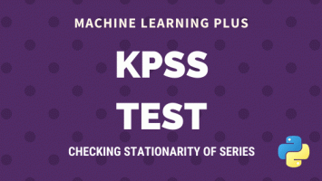
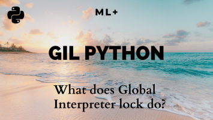
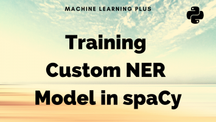

Also on machinelearningplus.com
cProfile – How to profile your …
Python Profilers, like cProfile helps to find which part of the program or …
Portfolio Optimization with …
Portfolio optimization in finance is the process of creating a portfolio of …
Bias Variance Tradeoff – Clearly …
Bias Variance Tradeoff represents a machine learning model's …
Principal Component Analysis (PCA) – …
Principal Components Analysis (PCA) is an algorithm to transform …

KPSS Test for Stationarity
KPSS test is a statistical test to check for stationarity of a series around a …

What does Python Global Interpreter …
Global Interpreter Lock (GIL) in python restricts multithreading. This post …

How to Train spaCy to Autodetect New …
Named-entity recognition (NER) is the process of automatically identifying …
![How to Train spaCy to Autodetect New Entities (NER) [Complete Guide]](./img-placeholder.df52e7638153b73862008d3d0556fdda.png "How to Train spaCy to Autodetect New Entities (NER) [Complete Guide]")
How to Train spaCy to Autodetect New …
Named-entity recognition (NER) is the process of automatically identifying …